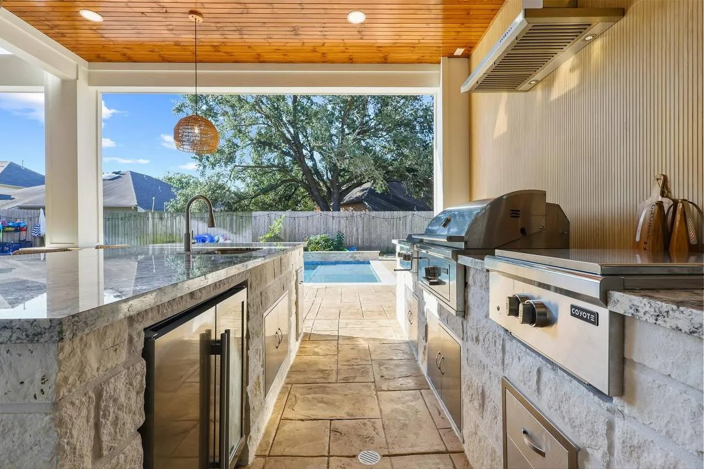
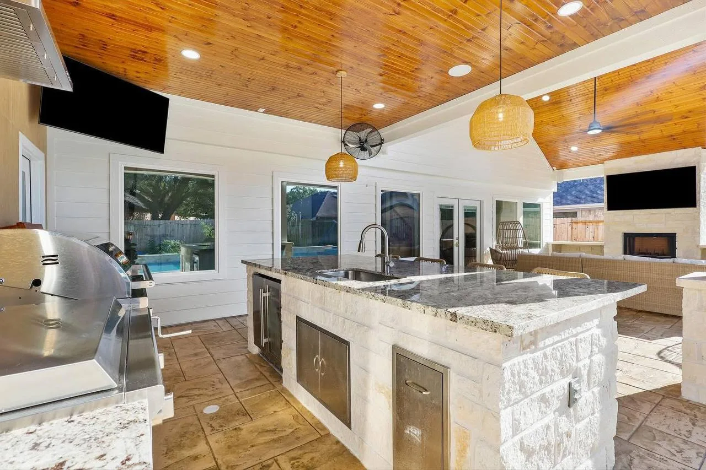
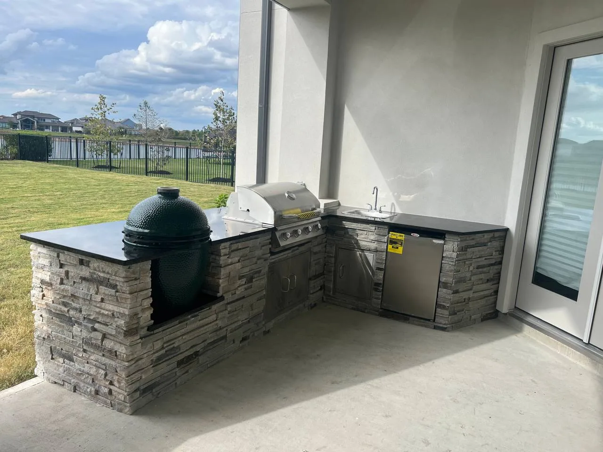
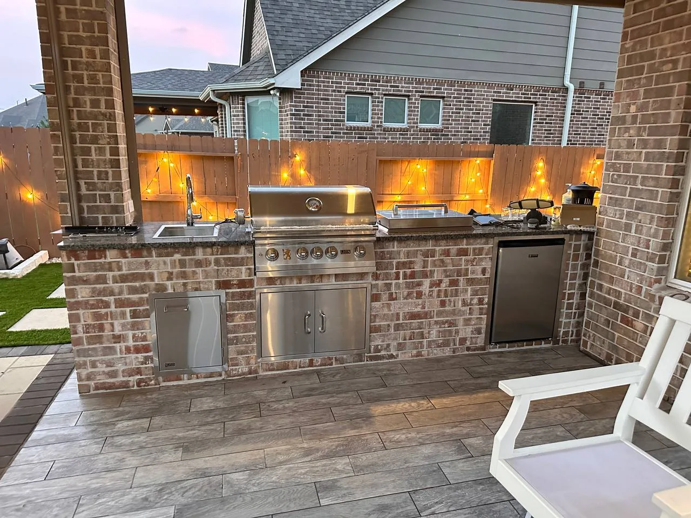
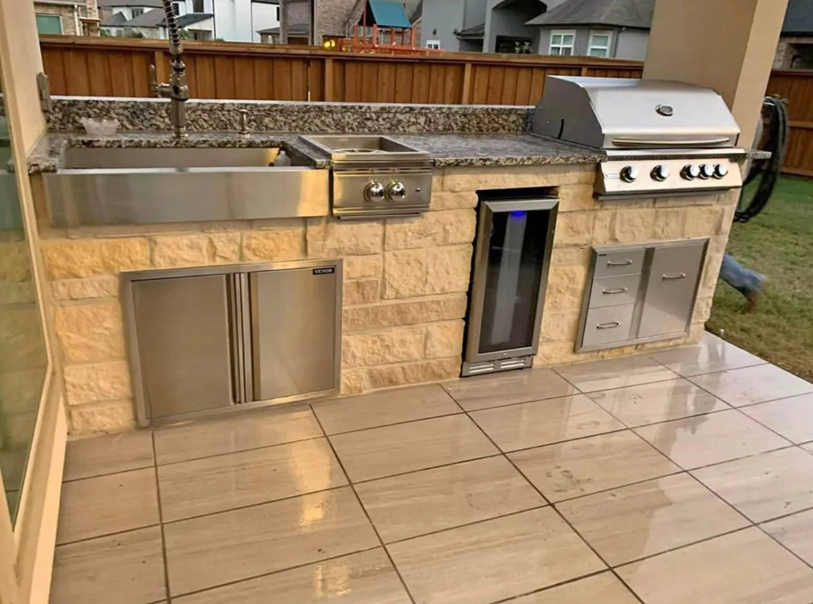
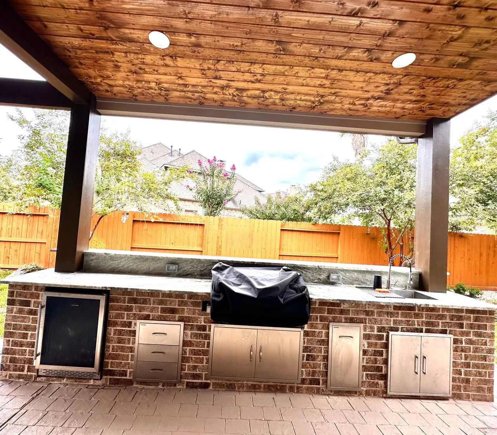

Host Like You've Always Wanted To
Custom Outdoor Kitchen Builders in Houston
- Fully Custom Designs
- Built for Houston Weather
- Free Consultation
Houston's Trusted Outdoor Kitchen Contractor
An outdoor kitchen turns your backyard into a year-round entertainment destination. Longhorn Hardscape & Construction designs and builds custom outdoor kitchens throughout Houston, Missouri City, Sugar Land, Katy, and Pearland. From a simple built-in grill station to a full outdoor cooking suite with refrigerators, sinks, pizza ovens, and granite countertops, we handle every detail — structure, plumbing, gas lines, and finishing. Every project starts with a free in-home consultation and prompt estimate.

Outdoor Kitchen Options We Build
Built-In Grill Stations
A custom masonry or stainless steel grill island — the essential starting point for any outdoor kitchen build.
Full Outdoor Kitchens
Complete outdoor cooking areas with countertops, sink, refrigerator, storage, and bar seating — everything you need to entertain.
Covered Kitchen & Bar Areas
Outdoor kitchens under pergolas or solid roof structures — so Houston rain and sun never cancel your plans.
Pizza Oven Builds
Custom wood-fired or gas pizza ovens built into your outdoor kitchen — a showstopper for entertaining.
Outdoor Bar & Entertainment Areas
Custom bar tops, kegerators, TV enclosures, and seating — designed for game days and family gatherings.
Poolside Kitchen Builds
Outdoor kitchens designed to complement your pool — with water-resistant materials and smart layouts for wet environments.
Why Choose Longhorn for Your Houston Outdoor Kitchen
Weather-Resistant Materials
We use materials rated for Houston's humidity and UV exposure — countertops, cabinetry, and finishes that won't warp or fade.
On-Time Completion
We coordinate all trades — masonry, plumbing rough-in, electrical — so your project finishes on schedule.
Adds Real Home Value
A quality outdoor kitchen adds meaningful appraised value to Houston homes — a smart long-term investment.
Fully Custom Design
No two kitchens are the same. We design around your space, cooking style, and budget — not a catalog template.
Our Outdoor Kitchen Build Process
Free Consultation at Your Home
We assess your space, discuss your cooking and entertaining style, and review appliance and material options together.
Custom Design & Free Estimate
We create a layout plan and provide a detailed written estimate covering all materials and labor before we leave.
Permits & Materials Sourcing
We handle any required permits and source all materials and appliances — coordinating delivery to match your build schedule.
Professional Build
We construct the frame, masonry, countertops, and install all appliances — working clean and communicating with you daily.
Final Walkthrough — Fire It Up
We test every appliance, show you how everything works, clean up completely, and hand you the keys to your new outdoor kitchen.
Outdoor Kitchen Projects in Houston, TX
Built-in grills, custom counters, and full outdoor cooking stations across Greater Houston.






Outdoor Kitchen Areas We Serve
Outdoor Kitchen FAQs — Houston
Every outdoor kitchen is custom — scope depends on the appliances you want, the countertop material, whether you're adding a covered structure, and the size of the space. We visit your home, discuss your vision, and provide a detailed written estimate at no charge.
Timeline depends on the complexity, appliance availability, and permit requirements of your specific project. We provide a clear, realistic schedule after a full site visit and project analysis.
Outdoor kitchens with natural gas connections or covered structures typically require a building permit in Houston. We handle all permit coordination as part of your project so you don't have to deal with the city directly.
The best countertop materials for Houston outdoor kitchens are granite, concrete, and porcelain tile — all handle heat, moisture, and UV exposure well. We advise against materials like wood or unsealed natural stone that degrade quickly in Houston's humidity. We'll bring samples to your consultation.